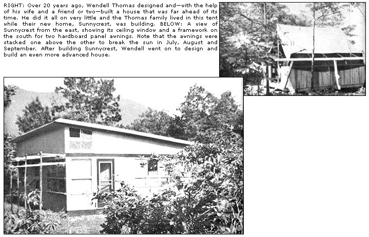
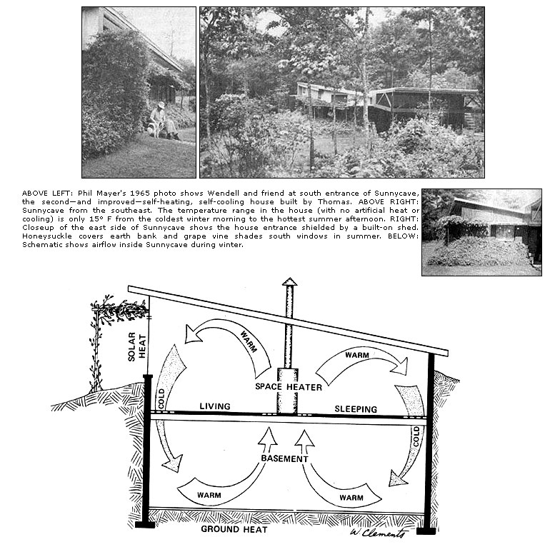

In 1948 my wife and I joined Celo Community, Inc., in the mountains of Western North Carolina and I chose a site - just off the top of a ridge, on the south side - for building a house. Our place was 100 feet above the highway and commanded a magnificent 7-mile southern view of the gap where the Blue Ridge and Black Mountains met. I had to climb a tree, however, to enjoy that view in the beginning! The Community sold me the acre I wanted for $100 and we lived in a small tent with a wooden platform and side walls while my talented Community friend, Phil Nordstrom, and I built the dwelling that I had designed and which we named "Sunnycrest."
I should say here that I am neither an architect nor a builder. I had been a university professor up North until I left to experience the world's basic kind of life and my wife had been a librarian. We took the Community plunge not knowing how we would make a living until my wife got a job driving a bookmobile, and eventually became an outstanding regional librarian. 1 worked on the place . . . and wrote.
Our 32' x 24' shed-roof dwelling was a moderately solar house. But its main feature was a slot between floor and wall - on all four sides-that drained cold air from the walls down to the deep, completely dry, sealed cellar. The living room was 32' long and 11' high at the front. The 3-way divided bathroom had wooden partitions and the two bedrooms could be enclosed with drapes.
We used the smallest Riteway heater in this house and our fuel was the wood we got from clearing. We spent not a cent on fuel. On the coldest winter mornings (temperature around zero) with no heat in the heater overnight, the temperature in the living space was about 50 degrees F. A fire built in the heater would raise the temperature to 70 within ten minutes and, at 9 in the morning, we would let the fire go out. The sun would then take over and keep the temperature of the house above 70.
I'm not presenting this house as a model. In fact, this article is really about another dwelling that I designed later and which I'll describe presently. But this first house gives me a chance to caution about the solar principle and to recommend the cold air drainage slot which, as far as I know, was my invention for dwellings.
I figured that the sun in our temperate zone shines about one-sixth of the time in the cold season: every other day, at a guess, and 8 hours out of the 24. So, unless you have elaborate arrangements for insulating the windows five-sixths of the time, you're losing heat-not gaining-with an "all glass" solar home design. It's enough to face a few large windows south and have an almost solid, well-insulated wall at the north and west (a western exposure is cold in winter and hot on summer afternoons). (A northern exposure is sunless and cold.)
The cold air drainage slot was suggested to me by the "cold air return" register of a hot air furnace system. My invention was to eliminate the registers and the voluminous, clumsy conduits leading to the furnace: and to raise the "furnace" (the small heater) to the living space. 'The floor should be laid to stop about 2 inches from the wall. You don't need a subfloor!
Cold air, of course, travels down the building's walls and goes down to the cellar without conduits if given a chance. At the same time, earth-heated air in the basement will be tending to rise and you may bring it up to your living space simply by boring holes in the floor near a central heater on the main level. The heater may burn wood, coal, oil, gas or electricity . . . but there warn't no electricity when we built this house!
You don't need a complete, deep cellar to make this idea work. You could have only a crawl space or part of a crawl space but the deeper and wider the under-area, the more heat you'll get from the earth. The main thing is to have no doors, windows or ventilators in the under-space. It should open only to the living area above.
At the opposite pole from the complete, deep cellar, I suggest the following: In a moderately solar house, use a dark-stained concrete slab for your foundation and floor, well insulated from walls and ground. Three-inch conduits should be laid at the cold corners and deliver it near a central heater.
In 1957 my father died and left me a small sum of money and, since our two adopted children were growing up, I decided to build another dwelling. The site I chose was a little to the southeast of the first house in a verdant gully. This gave me the idea of burying the new house (also 32' x 24') in the earth almost up to the roof on the north and west and up to the window sills on the south and east sides. We named' it "Sunnycave."
When the 4'-deep crawl space for the house was dug, I solved the problem of earth-pressure on the north and west walls by leaving a strip of earth 6'-wide within those walls and by reinforcing the 8-inch cinder block masonry. When the house was finished, the earth around it (which we covered with honeysuckle) kept the dwelling warm in winter and cool in summer.
The house had no openings to the cold north but there was a block-sized ventilator at the west (near the ceiling, next to the north wall), with an air passage through the house to a companion ventilator in the east.
The west wall extended 4' beyond the south wall, to keep the winter's cold west wind off the south wall and windows. Near this extension was a sheltered doorway in the south wall. Another doorway was in the east wall. near the north. The south had three large and two smaller windows. The east had one large window, over the kitchen sink. There was door glass, and glass in the storm door.
The shed-type roof, with a pitch of 1 to 8, was supported by framing and insulated with conventional insulation. The roof sheathing was good 2" matching lumber on 4' centers of 6" unfinished rafters. The rafters rested on a 10" double beam running through the middle of the house from east to west. This beam rested on the walls and two posts. The ceiling was one-half inch sound-absorbent insulation board over conventional insulation.
The roof sheathing was covered with roofing felt which should have been painted with aluminum coating for reflective insulation. The roof itself was crimp aluminum. I think corrugated aluminum would have been better for both reflective insulation and hot air drainage in the summertime.
The masonry walls were waterproofed outside with 2 coats of 1/4" cement plaster plus 2 coats of cement sealer. We insulated the living area walls inside simply by nailing on insulation boards with ordinary nails. We painted the boards Ripple Green.
The virtue of the shed-roof is to promote interior air circulation. The warm air goes up to the highest level, which is at the south. There were two transom windows-one at each end of the high south line-near the ceiling, to let the hot air out in warm weather. The two ventilators, the two doors and the two transom windows gave us plenty of ventilation.
The roof-overhang on the south side kept sunlight from the main windows in June and early July. But during the heat of late July, August and early September the sun was low enough to shine in. To prevent that, I constructed a three-foot wide frame above the windows on which wires were stretched parallel to the south wall. Grapevine and woodbine were easily trained to cover this trellis. Their leaves sheltered us from the sun's rays and the respiration of the leaves cooled the air. In the fall, when sunlight was welcome, the leaves dropped off.
The main windows were fixed and well insulated. The panes were all "double strength", one-eighth of an inch thick. I sealed the inside pane and left the outer one unsealed-like a storm window without a frame-by setting the glass against four little 1/2" blocks. Each block was nailed with one little nail and the pane of glass was fastened with another four nails. The air between the panes is non-humid outside air and does not fog.
I insulated the windows at night and on cold, dark days with heavy pull-drapes after covering the panes with aluminum-painted insulation boards. Two of the large windows were left uncovered, for light, and these special windows were three panes thick! It was nice, on a bitter cold day, to put your hand on the inside pane and feel it warm. The transom windows I fitted with extra panes, and even covered the greater part of the screens with glass in the cold season.
Sunnycave, like Sunnycrest, had cold air drainage slots which gave us a no-draft floor. When someone opened an outside door, the cold winter air drained down to the crawl-space through the register right by the door and did not scoot across the floor. No chilly feet in these dwellings! Children could play on the floor in comfort. You could put a pad on the floor and sleep there just as if you were sleeping on a bed.
Another virtue of the "no draft floor"-aside from saving heat, trouble and expense-is the way it (and the sloping ceiling) promotes internal circulation of air. Even with everything closed, the air in our houses never felt stuffy.
Still another point should be mentioned. In the ordinary house, the living space is too dry, especially when the house is heated. The floor cracks, furniture falls apart and your throat gets dry . . . while whatever is in the basement stays too damp and moldy. On the contrary, in our houses-where the air circulates up and down all the time-the living space is normally humid and the below space just slightly more humid.
In Sunnycrest, on the coldest winter morning, the temperature was 50 degrees; on the hottest summer afternoon, 85. In Sunnycave, on the coldest winter morning, the temperature was 60; on the hottest summer afternoon, 75. For that reason I prefer Sunnycave. Its temperature varies only 15 degrees throughout the year!
If I were to design Sunnycave again today, I would do it just as I did . . . except for one thing: I would not bring an earth-bank almost to the roof on the north and west sides (it's not necessary), but only to the window sill level. I think that an earth-bank up to window sill level, coupled with a no-draft floor, is fundamental. The main thing about the north and west is to have no doors and few or no windows in a heavily-insulated wall.
Since building Sunnycave, I've learned from Ken Kern that, "In 1935, Frank Lloyd Wright designed a community of low-cost 'Berm' houses. He made logical use of earth-insulation by back-filling to window sill level. This construction provided excellent insulation and saved on wall maintenance and finish. Unfortunately, the idea was too unorthodox for the public to accept at that time so the scheme was never carried to completion."
Since building Sunnycrest and Sunnycave, my children have grown up and moved away and my dear wife died suddenly of a stroke. I've now moved to South Carolina to live with my sister's family but each of my houses is currently being lived in and enjoyed by a young couple.
I now spend all my time writing about creative peace and this article contains most of what I know about earth-insulation and no-draft floors. If you have have questions to ask, please consult Ken Kern, Sierra Route, Oakhurst, California 93644. Ken is an earth-loving architect and builder, author of THE OWNER-BUILT HOME and THE OWNERBUILT HOMESTEAD and he is a recognized authority on low-cost and innovative building.
|
 |
 |
|